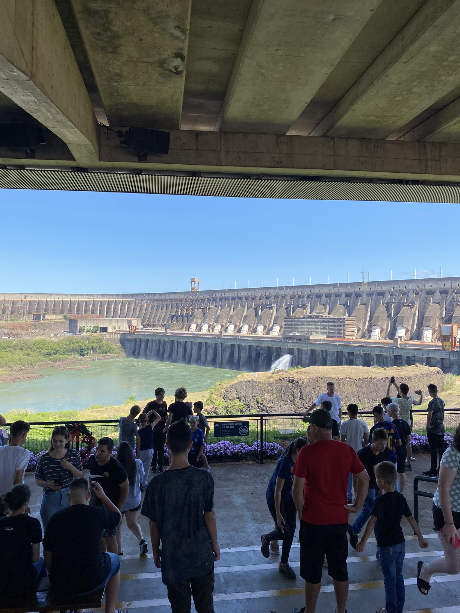
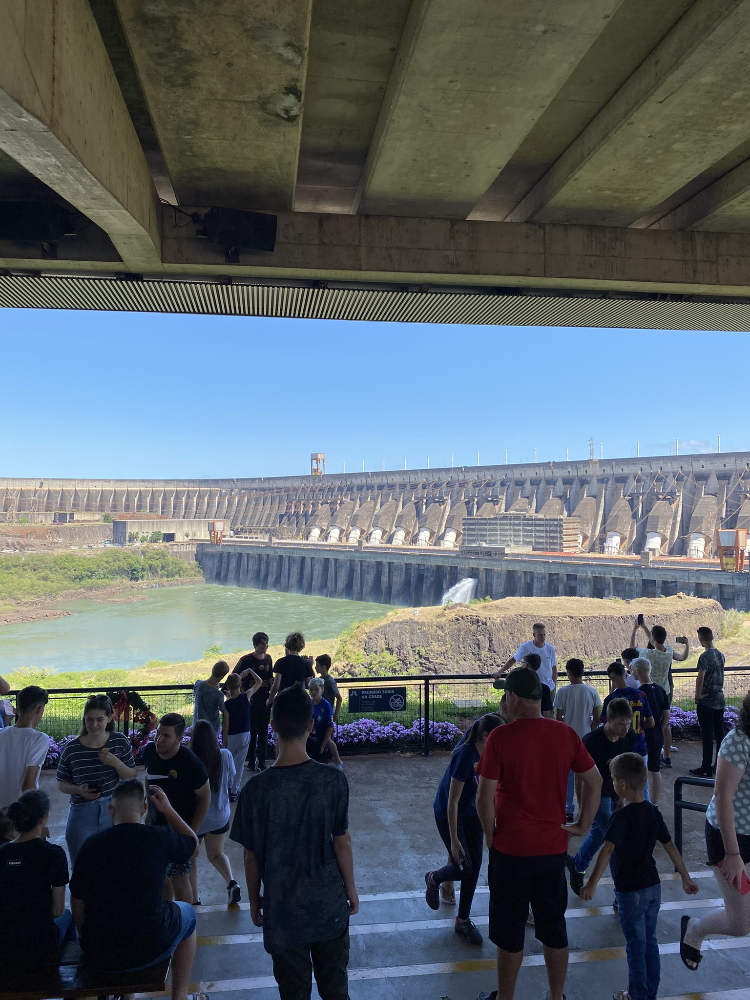

A viagem
Cruzamos Santa Catarina e Paraná em uma excursão escolar, destino à Foz do Iguaçu... Conhecemos a usina hidrelétrica de Itaipú, o parque das aves, as cataratas do Iguaçue também o templo budista.

Galeria de fotos
 



Depoimentos
- Juliana:
-
Conhecer as cataratas foi uma experiência única.. o lugar que mais gostei de ir foi no bar de gelo e no museu de cera dreamland. com certeza iria mais vezes!